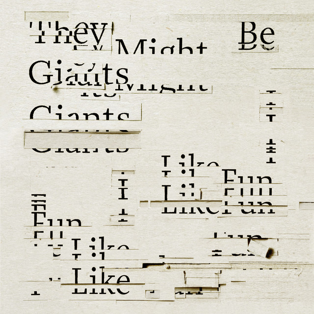

Let's get this over with, by They Might be Giants
The drumbeat never changes tempo
Its steady like a rock
and like a rock it crushes you as it gets louder
the drum gets louder
and louder
and you know there is no parking on the dance floor
and when you wake up you can feel your hair grow
Crawl of you cave and you can watch your shadow
creep across the ground until the day is done
all the while the planet circles round the sun
everybody knows how this goes so lets get
and lets get this over with
Even when your out of work you still have a job to do
even when you dont know what it is your job knows what it is
what it is
is its coming to get you
Im talking to myself even when im saying 'You'.
and when you wake up you can feel your hair grow
Crawl of you cave and you can watch your shadow
creep across the ground until the day is done
all the while the planet circles round the sun
everybody knows how this goes so lets get
and lets get this over with
after all the spelling mistakes
after all the groping in the dark
cant this page of strange gibberish
get a final punctuation mark?
Youre still hanging around the clambake
after every clam has been baked
No applause
Awkward pause
Hand extended waiting for a shake
and when you wake up you can feel your hair grow
Crawl out of you cave and you can watch your shadow
creep across the ground until the day is done
all the while the planet circles round the sun
everybody knows how this goes so lets get
and lets get this over with
Hurry up and lets get this over with
You dont have to go home but you cant stay here
everybody knows how this goes so lets get over it
and lets get this over with.

image credit: https://open.spotify.com/track/548HTFLrJmPHGmqMKVhmi9